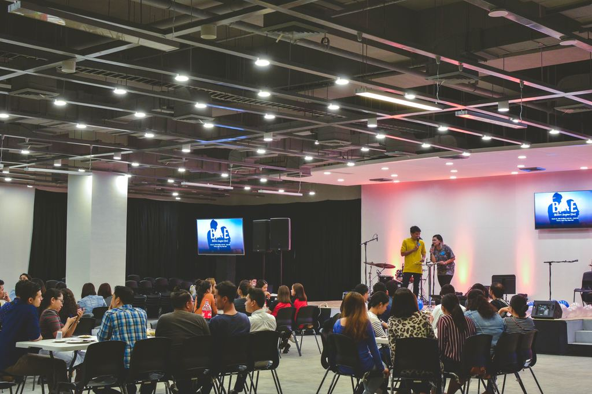

.jpg)


We began the day with an introduction to the way Nairobi Town Council is supporting tree planting using the Neighbourhood Plan from Gerard Tucker, deputy town clerk. We also heard from plant scientist and former vice president of the Royal Society, Professor Sir David Read, who emphasised the need to increase afforestation to facilitate carbon sequestration with a useful summary of the global state of health of forests, based on his work from Combating Climate Change: A Role for Kenyan Forests Evolutionary ecologist Dr Alan Rayner joined us in the first of the privately funded live-streamed talks, sharing his view of natural selection as ordered for 'survival of the fitting'. Alan wrapped our brains around an inclusive approach to scientific language for a less ecologically damaging mindset. Then we were brought right into our hearts when explorer Bruce Parry gave us what felt like a direct transmission of the truths of tribal people in their communication with trees, and the messages they received from them. There was a special atmosphere in the room especially during excerpts from his film, TAWAI, which showed the Piraha, an indigenous people of the Amazon Rainforest, explaining what the trees were saying to them, how they listen to them through their hearts and what the trees said about the local deforestation – “Don’t burn us, it hurts”. Bruce's talk really struck a chord with how audience members connect with nature and created a safe space to be open about sharing these experiences. I warmly recommend watching Bruce’s talk for the full experience. From here the conference felt like it took a path of its own into deep conversations during networking and lunch. Other highlights included Diana Beresford-Kroeger on the best native trees for ‘forest bathing’. You can read more about Diana’s guide to the bio-chemical properties of different trees, including details about the effect of trees on land to the health of marine life on the Tree Conference website.Fans of reforestation charity TreeSisters would have enjoyed an interview between founder, Clare Dubois and the charity’s treasurer, Wendy Stephenson. These women, alongside countless others, have created an extraordinary powerhouse in the last five years, with a huge international membership focused on reforesting the tropics. They also have feminine empowerment meditations and interviews with global environmental leaders on their website. Wendy Stephenson’s work including around how the economics of reforestation can save taxpayers money is definitely worth more investigation. The UN Climate meetings in Bonn were underway so it was interesting to hear again from Wendy Stephenson on the panel about the blocks the implementation of Kyoto Protocol has unwittingly placed for businesses and governments to sequestering carbon through reforestation. During the panel, John Tucker of the Woodland Trust and Professor Sir David Read, fellow of the Royal Society highlighted that Kenyan planting rates currently average 5,000 hectares per year. We’re felling trees faster than we’re planting. In the 1950s and 60s we were planting 25,000-30,000 hectares annually. If we’d retained the level of planting from that era we’d be carbon neutral by now. They both felt a target of 15% forest cover in the UK was realistic and achievable. It was interesting to note Sir David’s observation about the types of trees we need to be planting, highlighting that conifers draw down the carbon needed to preserve the environmental habitats of the native broadleaf trees. This was an unexpected angle on the relevance of conifers to the biodiversity of the Kenyan habitats in the long term. It was great to give a platform to voices we don’t hear so often; learning from Simon Miles about forest gardening and from Isla Macleod about her experience of directly connecting with trees. We didn’t specifically define ‘sentience’ and therefore by-passed discussion around the associated fascinating science for this year. What instead became clear was that Isla had been using the techniques outlined in Bruce’s talk! Therefore in many ways Isla drew together the strands picked up by the delegates on the day by encouraging us to act from that place of love we feel in nature.
Our focus now is to support projects and planting in Somerset. We’ll use what we learn here and our network globally to profile different effective methods as templates for what people can do in their local areas. We will also move towards skills-swap support online and continue to work with our partners to articulate the ‘global citizen voice’ for the protection of trees. The conference has fuelled hope for how people-based approaches to mass planting can work. Despite our various traditional cultural differences, we’re all united around a common call to action - we urgently need to plant a lot more trees and protect old growth forests to avert the worst excesses of climate change and for the wellbeing of our children. The Tree Conference 2019 will focus on education. You can watch films of the talks and check out more from the day including articles and details of our partners, projects. We’d love to hear of the tree projects and methods you think need highlighting too.